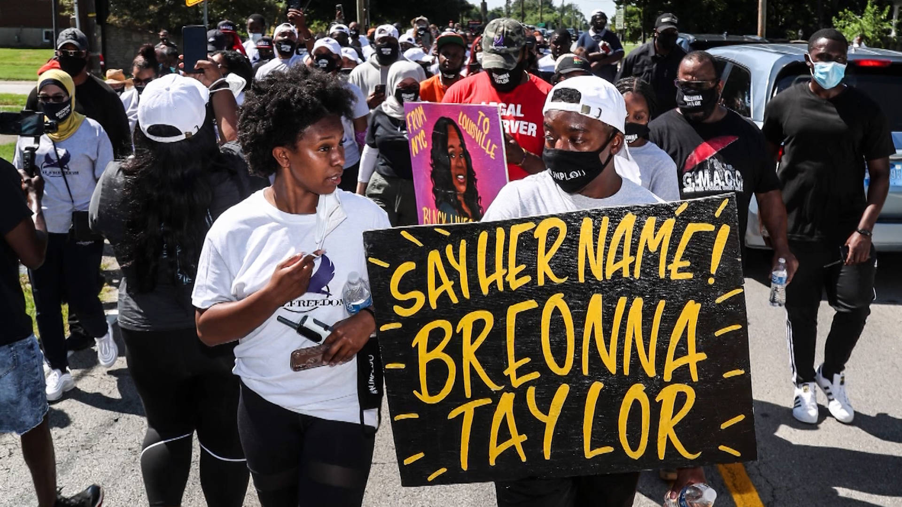

| Her Life | Her Death | Her Case | How You Can Help | Contact Us | Home |
|---|
Walker states that him and Ms. Taylor put on clothes and grabbed a gun, frightened by the late night banging. He said they had not made it down the hallway to the front door before it “comes off its hinges” (Duvall and Costello). Mr. Walker then said he “let off one shot,” adding “I still can’t see who it is or anything” (Vice News).
Walker states that he did not know the people entering his house were police officers and fired once in self-defense, hitting Sargent Mattingly in the leg.
In response the police fired two waves of bullets consisting of 32 rounds total into the apartment, killing Ms. Taylor (Sanchez).The first grouping of shots was instigated by Mr. Walker’s one shot that hit Mattingly. The second grouping of shots appeared unprovoked. Mr. Walker never fired a second round.
Hankison, who has since been fired from his position “shot 10 rounds blindly into the apartment” (Oppel et All) Mattingly and Cosgrove fired bullets that helped kill Breonna Taylor (Vice News). Hankison stated he believed that the officers were, “all getting sprayed with bullets.” Likely the sound he heard was of police spraying bullets into Breonna’s apartment (Sanchez). Hankison in a 911 call after the shooting believed that his fellow officer Sargent Mattingly had been shot by someone with an “A.R,” referring to an automatic rifle (Oppel et All). He later stated in an police integrity unit interview that he sees someone “in a shooting stance and it looks as if he was holding, he or she was holding, an A.R. 15 or a long gun, a rifle” (Vice News). The only gun found at the scene was a small handgun.
Taylor had five gunshot wounds, the one to her left breast was deemed the fatal shot(Sanchez). Mr. Walker was first arrested and charged with attempted murder of a police officer, the charge was dismissed in May (Oppel et All). The commanding swat officer called to the scene when observing the scene stated, “our initial thought is, oh they’re shooting out the window at the police” (Vice News).

At the crime scene, the ambulance that was on standby outside of the apartment has been dismissed an hour before the raid but was called back to give aid to Mattingly, who had been shot in the leg. Breonna was not given any medical attention.(Oppel et All). Kenneth states in a police interview that he shouted, “Somebody come help her!” and heard no response. Kenneth first calls Breonna’s mother, then 911. (Duvall and Costello).
Mr. Walker added, “"What really made me not realize it was the police was because nobody was like rushing in after all this happened. They all like stayed outside, so I'm like, what the heck was that?" (Duvall and Costello).
According to dispatch logs, Breonna did not get any medical attention for 20 minutes after she was fatally shot. Additionally, the police did not radio about Taylor still being inside the apartment until almost a half an hour after the shooting. (Duvall and Costello).
Body camera footage from the swat team shows an officer involved in the raid explaining the situation to the swat team member stating “’[Walker] said she’s down. She’s dead. But we weren’t rushing in there to check’” (Vice News).